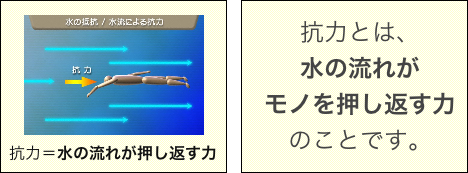
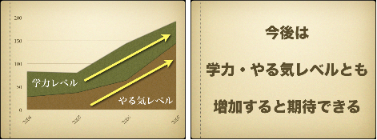

プレゼンテーションpresentationとは、自分の考えを伝えるために行なう口頭発表のことである。
デジタルプレゼンテーションとは、コンピュータcomputerとスクリーンscreenを使って行なうプレゼンテーションのことである。
コンピュータを使うといっても、何をどのように使うかは発表者の自由である。Keynoteなどのプレゼンテーションソフトpresentation softwareを使ってもいいし、PDFファイルやワープロWord Processorのドキュメントを全画面full screen mode表示してもいい。また、HTMLファイルをウェブブラウザWWW browserで表示したり、QuickTime Movieを使ったり、画像表示ソフトimage viewerのスライドショーSlide Show機能を使うこともできる。
何を使うかについては、それぞれに長所と短所がある。たとえば、ワープロのドキュメントは簡単につくることができるし、PDFファイルやスライドショー用の画像ファイルも同じである（ワープロソフトやドローソフトdraw software、エディタtext editorなどから直接書き出せば良い）。しかし、これらのファイルでは、発表時にアニメーションなどの視覚的な効果は使いづらい。逆に、プレゼンテーションソフトやQuickTime Movieでは、発表時に視覚的な効果が期待できるが、作成にはやや手間がかかる。HTMLファイルは、そのままウェブ上に公開して情報を共有できるという利点があるが、同じく作成には手間がかかる。
また、スクリーンといっても、実際にはいろいろな設備が使われる。たとえば、プロジェクタ（投影機）projectorで投影したものを全員で見る場合もあるだろうし、個々人の前に小型のディスプレイdisplay monitorがあり、それを通じて見る場合もあるだろう。
プレゼンテーションには、次のような特徴がある。
まず、プレゼンテーションは、『自分の考え』を伝えるために行なうものなので、次のことが重要になる。
プレゼンテーションでは、話しことば・書きことばだけではなく、必要に応じてイラストやグラフ、写真、ムービーなどを使って説明をする。
イラストを使った説明(左)と書きことばでの説明(右)
グラフを使った説明(左)と書きことばでの説明(右)
プレゼンテーションの際には、内容によって〈書きことば＋話しことば〉で説明するのが良いか、〈イラスト＋話しことば〉や〈グラフ＋話しことば〉で説明する方が良いのか考える必要がある。
たとえば、ウェブページであれば、いつでも・見たいときに・どこからでも見ることができる。しかし、プレゼンテーションは、きめられた場所（発表会場）できめられた時間に行なわれる。
そのため、かならず制限時間を守らなければならない。実際の発表時間が、きめられた時間よりも短すぎるのは良くないが、長すぎるのも良くない。
きめられた時間を守るためには、事前によく練習するのがいちばん良い。また、対話型のプレゼンテーションファイル（発表者が自分で操作することで、ページやスライドが次に進むもの）ではなく、自動再生型のプレゼンテーションファイル（ムービーなどのように、設定しておいた時間にあわせて自動的に進んでいくもの）を使うという方法も考えられる。
また、会場の広さや設備にも注意する必要がある。
プレゼンテーションでは、発表者の話を聞く人たちが目の前にいる。そのため、聞いている人に向かって話すようにしなければいけない。
ただ、変に気どって話す必要はないし（変な
コミュニケーションの場面で外国語を話すには、勇気（恥ずかしがらずに話すこと）が必要である。その勇気を持つために人の前で話す経験をする練習が、（スピーチ）パフォーマンス(speech) performanceである。パフォーマンスでは、自分を表現することが求められる。そのためには、（それが自分らしい表現方法なのであれば）聞いていて恥ずかしくなるような話し方や、大げさな身体表現をしても良い。しかし、プレゼンテーションはパフォーマンスではない。重要なことは、自分を表現したり場面を経験をすることではなく、自分の考えを人に伝えることである。
聞いている人に向かって話すのだから、発表のときに下ばかり見ないようにすることが大切である。聞いている人たちの顔を見ながら発表するようにしたいものである。
内容をすべて書いた原稿を用意して、それを読みあげるだけでは良い発表にはならないだろう。内容を原稿に書くのは良いことだが、事前によく発表の練習して、実際の発表ではメモ書き程度のものを見るだけにしたい。
机や演台がある場合、メモや原稿はできるだけ身体から遠いところに置くのが良い。身体に近いところに置くと顔を下に向けなければ見ることができない（図左）。しかし、身体から離して置けば視線を動かす程度で見ることができる（図右）。そのため、メモや原稿は大きめの文字で作っておくのが良いだろう。
また、発表資料にある文章（たとえば、プリントに印刷された文章やスクリーンに表示された文章）を読みあげるだけの発表も良いものとはいえない。資料にはポイントとなる部分を示し、詳しい説明を話すようにするのが良いだろう。
プレゼンテーション用のファイルをつくるときには、次の点に注意すること。
プレゼンテーションのファイルには、発表者の名前・所属をはっきりと示すようにする（名前を書くのは、発表内容に誰が責任を持つのかを示すためである）。１ページ目（１枚目のスライド）に、発表のタイトル（テーマ）とともに記すのが一般的である。
それぞれのページ（スライド）には、見出しと通し番号（1., 2., 3., 4...）をつけた方がわかりやすい（ただし、必ずつけなければいけないわけではない）。見出しをつけるときには、見出しを「文」の形にはしない方が良いだろう。たとえば、「問題になるところを考えます」ではなく、「問題点の考察」のようにした方が良い。
なお、見出しが２行以上になる場合は、単語と単語の間で折り返すようにする（語の途中で改行するのは良くない）。
居酒屋でビールの売り上げをアッ
プする方法
居酒屋でビールの売り上げを
アップする方法
ページ（スライド）をつくる場合には、どこにポイントがあるのか明らかになるようにする。つまり、最も重要なことが最も目立つようにするということである。
たとえば、とても重要なことを示すときには、大きくて太い文字で表示するのが普通である。逆に、あまり重要でないことを（重要なことよりも）大きな文字で表示してしまうと、発表を聞いている人に誤解を与えてしまうかもしれない。
また、イラストや写真を表示するときにも、それがどのくらい重要なのかによって、表示する位置や大きさを考える必要がある。重要な画像を中央に大きく表示するのは良いが、あまり重要でない画像や、発表とは直接関係がない「飾り」のような画像は、隅の方に小さめに表示するようにしたい。
基本的に、スクリーンは縦の長さ（画面の高さ）よりも横の長さ（画面の幅）が大きい。たとえば、ワープロを使って、ファイルを作る場合には、用紙の設定を横長にしておく必要がある。特に、HTMLファイルは、基本的に縦に長くなるものなので、ページの作り方や発表時の見せ方を工夫する必要がある。
広い会場で、プロジェクタと大型スクリーンを使う場合、文字が小さかったり細かったりすると、うしろの席から見えない（見づらい）ことがある。ファイルに使う文字の目安は、28ポイント以上のゴシック体（日本語の場合）。
ポイントを示すのに、箇条書きは良い方法である。しかし、箇条書きの項目の長さが揃っていないのは、見づらいものである（特に、１行の項目と２行以上の項目があるものは見づらい）。表現を変えたり、項目の情報を追加したり省略したりして（もちろん、省略した情報は口頭でおぎなわなければならない）、できるだけ長さが揃うようにしたい。
１ページにたくさんの文字情報があるのは、見づらいだけでなく、内容も理解しづらくなるだろう。１ページの行数は、多くても７〜８行以内（見出しを除く）になるようにしたい。
ファイルの配色（文字の色と背景の色の組み合わせ）は、見やすいものになるように注意する。配色については、「ウェブページの作成」の「文字の色と背景の色を変更に関する注意」を参考にすること。
ファイルは、発表時間にあわせて作らなければならない。ページ数（スライドの枚数）の目安は、だいたい１分に１ページ（１枚）である。
《参考文献：木下是雄（1981）『理科系の作文技術』中央公論社.》